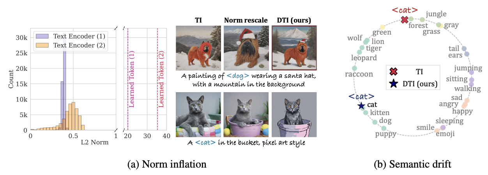
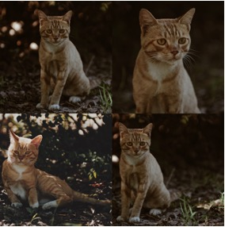
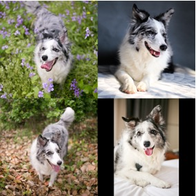
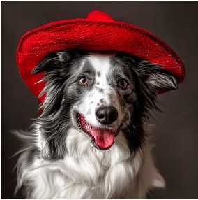
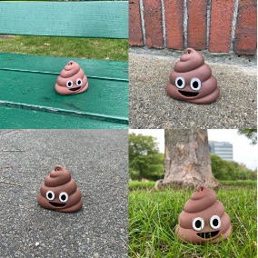

Textual Inversion (TI) is an efficient approach to text-to-image personalization but often fails on complex prompts due to embedding norm inflation—learned tokens drift to out-of-distribution magnitudes, degrading prompt conditioning in pre-norm Transformers. We show empirically and theoretically that semantic information is primarily encoded in the direction of token embeddings, while excessive magnitudes impair positional information and residual updates. We introduce Directional Textual Inversion (DTI), which constrains the embedding norm to an in-distribution scale and learns only the direction on the unit hypersphere via Riemannian SGD. We cast direction learning as MAP estimation under a von Mises–Fisher prior, producing a constant-direction prior gradient that is simple and efficient to incorporate. DTI improves text fidelity over TI and TI-variants while maintaining subject similarity, and uniquely enables smooth, semantically meaningful interpolation (slerp) between personalized concepts. These findings suggest direction-only optimization as a robust and scalable solution for prompt-faithful personalization.

We find that semantics in CLIP and Gemma token embeddings are predominantly encoded in direction. TI often learns embeddings with very large norms, causing positional attenuation and residual-update stagnation in pre-norm Transformers. This leads to missing details in complex prompts.
DTI parameterizes the embedding as $e = m \mathbf{v}$, where the magnitude $m^*$ is fixed to an in-distribution value and $\mathbf{v}$ lies on the unit sphere. Updates are performed via Riemannian SGD with tangent-space projection and spherical retraction.
We impose a von Mises-Fisher prior encouraging the learned direction to remain semantically meaningful:
This yields a constant gradient term $-\kappa \mathbf{\mu}$, providing stable regularization analogous to weight decay but in directional space.

Reference
Reference

ReferenceIf you find our work useful, please cite:
@inproceedings{kim2026directional,
title={Directional Textual Inversion for Personalized Text-to-Image Generation},
author={Kim, Kunhee and Park, NaHyeon and Hong, Kibeom and Shim, Hyunjung},
booktitle={International Conference on Learning Representations},
year={2026}
}